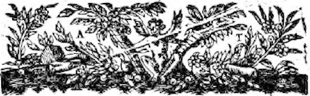
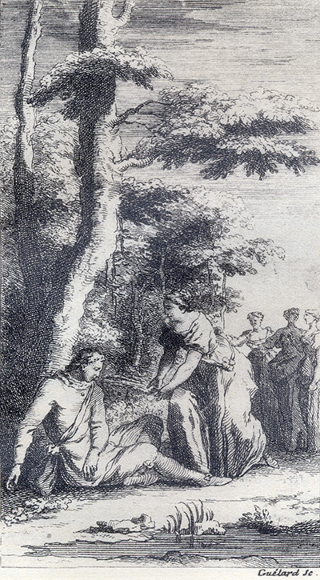
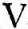

L'Astrée d'Honoré d'Urfé
Quatrième partie
Livre 1

Gravure signée Guélard.
Phillis secourt Silvandre évanoui avant d'appeler Diane, Astrée et Alexis.
Silvandre « se laissa couler sur la terre » ;
Phillis « puisant de l'eau dans ses mains s'en revint courant la lui jeter au visage »
(IV, 1, 155).
L'Astrée. Édition Vaganay**, 1925, IV, 2.Gravure signée Guélard.
Phillis secourt Silvandre évanoui avant d'appeler Diane, Astrée et Alexis.
Silvandre « se laissa couler sur la terre » ;
Phillis « puisant de l'eau dans ses mains s'en revint courant la lui jeter au visage »
(IV, 1, 155).
(Voir Illustrations)
plutôt à la dextérité de son esprit et de ses mains qu'à toute autre chose ; si bien que Phillis, voyant qu'elle lui était inutile, adressa sa parole à Astrée, et lui dit : - Je crois, ma sœur, que je pourrais bien avoir le loisir d'aller voir comment se porte Diane, et d'essayer de l'amener avant que vous soyez toutes deux habillées, car ce n'est pas en user comme notre
ancêtre
η nous l'ordonne que de la laisser si longuement seule, avec le déplaisir
η qu'elle ressent. - Quel est l'ennui qu'elle a ? demanda incontinent Alexis, lui est-il advenu quelque malheur ? Astrée alors en souriant lui répondit : - Encore que celui qu'elle ressent ne soit pas des plus grands, si ne laisse-t-il de lui être fort sensible ! Mais Madame, il ne faut pas vous importuner d'ouïr
auprès de moi, qui ne m'en épouvante pas beaucoup, car je sais assez jusques où va l'autorité d'un oncle sur une nièce,
bien qu'elle soit sans père et sans mère, et ce
que je lui dois. Et suis bien certaine qu'il est si religieux envers les Dieux, qu'il ne leur voudrait pas ravir une volonté qui leur serait entièrement dédiée. Et pour ce mariage, croyez que si j'en ois parler davantage, j'en trancherai le désaveu
si court qu'il n'en fera jamais plus de bruit, aussi n'est-ce pas de cela que ma peine procède. Il y a une difficulté que Léonide a omise et que je trouve bien plus grande que toutes les autres : c'est de savoir avec quel service et par quels moyens je pourrai m'acquérir votre volonté et celle des autres Vestales, qui même n'ayant
STANCES.
Les hommes sont sans amitié
η.
I.
QUelle erreur insensée a séduit nos esprits ?
Quelle faute
de cœur nous tient dans le mépris,
η
Où si longtemps nous sommes ?
Quel fut l'aveuglement qui les femmes déçut
En leur faisant chercher l'Amour parmi les hommes
Où jamais il ne fut ?
II.
Quel siècle n'a point vu les dures cruautés,
Les barbares effets et les déloyautés
De leurs cruelles âmes ?
Quels sauvages déserts, quels lieux plus reculés,
Et quels Dieux n'ont ouï les cris de tant de femmes,
Mais en vain appelés
η ?
III.
Thésée, où t'en fuis-tu ? Pâris, de quelle loi
Te sers-tu contre Œnone ?
Et toi, Troyen
η, pourquoi
T'en fuis-tu de Carthage ?
Une seule raison les soutient contre nous :
Tout homme fait ainsi, ce n'est pas un outrage
De faire comme tous.
IV.
Homme non pas humain, mais farouche animal,
Sexe au monde inventé pour nous faire du mal
Honte de la Nature
Qui ne faillit jamais sinon te produisant.
Dieux, pourquoi mîtes-vous sous une loi si dure
La femme en la faisant ?
V.
Dure et sévère loi, tu fais que nous vivons
Le serpent
η dans le sein. Dire nous te pouvons
Non loi mais tyrannie.
Ô combien durera notre captivité ?
Encore que d'un moment, Dieux, vous l'eussiez finie,
Trop longue elle eût été.
lut tout haut ces paroles :
ORACLE
η.
Le mal de toutes trois en Forez guérira,
Le mort
η qui sera vif un Médecin sera,
L'autre
η à qui l'on rendra, quoiqu'elle le rejette,Le bien que, de son gré, perdre elle aura voulu,
Mais qui, sans que de vous l'ouverture en soit faite
L'Oracle
η vous dira, tenez pour résoluCe qu'elle ordonnera, car c'est mon interprète.
STANCES.
Divers effets de son affection.
I.
VOUS qui tenez pour une fable η
Qu'un même cœur vive en deux lieux
,
Voyez
qu'
Amour
ingénieux,
En
moi le veut rendre croyable,
Puisqu'en
dépit de cette loi
Je vis en
Diane
η et en moi.
II.
Vous qui la Piralide ardente,Croyez l'étincelle d'un feu,
η
Voyez, je
vous supplie, un peu
Quelle est l'amour qui me tourmente :
Dans le feu sans cesse je suis,
Et si, vivre ailleurs je ne puis.
III.
Vous qui vous fâchez de n'entendre
Le flux et reflux de la mer,
Veuillez, comme moi, bien aimer.
Amour vous le fera comprendre :
Espérer
η et n'espérer plus
N'est-ce le flux et reflux ?
IV.
Vous qu'Etna de
gorge béante
Étonne en ses brasiers ardents,
Voyez le feu que j'ai dedans
η
Qu'avec tant de soupirs j'évente,
Et puis dites assurément :
- Plus grand est cet embrasement
η.V.
Si toutefois votre croyance
Est faible à
tant de nouveautés,
Voyez une fois les beautés
Dont procède cette puissance,
Vous direz, ravis de les voir :
- Plus grand encore est leur pouvoir
η.
Fin du premier livre.

Liminaires

Livre 2
Référence électronique :
document.write('"'+document.title.substr(0, document.title.indexOf("-")-1)+'". '+"Dernière mise à jour : "+ExtractDate(document.lastModified)+".")Deux visages de L'Astrée.
©2005-2020 E. Henein.
URL :
var today = new Date();
document.write(document.URL +
"<br>Consulté le : " + today.toLocaleDateString("fr-FR") + ".");
var _gaq = _gaq || [];
_gaq.push(['_setAccount', 'UA-19288475-1']);
_gaq.push(['_trackPageview']);
(function() {
var ga = document.createElement('script'); ga.type = 'text/javascript'; ga.async = true;
ga.src = ('https:' == document.location.protocol ? 'https://ssl' : 'http://www') + '.google-analytics.com/ga.js';
var s = document.getElementsByTagName('script')[0]; s.parentNode.insertBefore(ga, s);
})();
Deux visages de L'Astrée.
©2005-2019 Eglal Henein. Creative Commons 4 
Édition critique de la première partie de L'Astrée (1607, 1621)
mise en ligne le 9 avril 2007
Édition critique de la deuxième partie de L'Astrée (1610, 1621)
mise en ligne le 10 octobre 2010
Édition critique de la troisième partie de L'Astrée (1619, 1621)
mise en ligne le 1er novembre 2014
Édition critique de la quatrième partie de L'Astrée (1624)
mise en ligne le 15 janvier 2019
document.write("Dernière mise à jour : "+ExtractDate(document.lastModified))